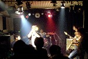
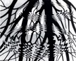
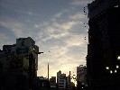

strange music page
* * * 2002.11
-2002.11.30 特に何も
#本田ゆか/Memories Are Only My WitnessとOtomo New Jazz Quintet/Liveってのはウツボカズラさんの2002年のノンジャンルベスト5を選ぼうと思ってて色々聴いてた時に、そーいえば書いてなかったなぁと思って。
本田ゆか（チボマット）のソロは聴き直してみたら結構良かったです。
それと先程、2chのKILLNG TIMEスレッド見てたら、なんと12月におUのCD発売だってさ。ありがとうPOSEIDON RECORD・・・
小川美潮
-2002.11.26 perl
#自分の整理の為に、このページの総インデックス(perlで書き出してみた)。1300枚以上くらいかな？
procol harum/a whiter shade of pale
-2002.11.25 ROVOのTシャツ当たったよ
#渋谷タワレコで、ROVO/FLAGEとVincent Atomics/VINCENT Iを買ってきました。
ROVOは何だかタワレコ特典で「ROVOくじを引いて下さい」との事、2等のROVO Tシャツをゲットしました。抽選に当たるなんて何年ぶりだろう・・・これはやっぱり年末のライヴに行かなきゃ駄目かな？
あと、Overgroundっていう雑誌（記事内容: 武尊祭,True People's CELEBRATION,福島輝人×大友良英）を買いました。内容はともかく\300なら買うわな。
あと、視聴機におニャン子クラブ/ショーミキゲンが入ってたので、怖いもの見たさで聴いてみました。「ぐわぁ」とか思うほどおニャン子の曲を模した曲調。メンバーの中に渡辺満里奈が居なくて心底ほっとしました、一緒の視聴機に入ってたソニンと並んでなかなか自虐的な感じ。やっぱり秋元康なんですね。
♪ROVO/FLAGE
-2002.11.24 練馬の畑
#大泉学園からバスで梅津和時さん主催のFESTA IN VINYLを見てきました。
初めて行ったんですけど、本気で畑の中。飯がとても美味しかったんですけど、寒くてお腹壊してて若干しんどかったです。
野外イベントとかともちょっと違う、畑の中のミョーなテンションのライヴ。
出てたのはこまっちゃクレズマ/PHOTON/ほとらぴからっ。PHOTONで篠田昌巳さんの曲が聴けたのが嬉しかったです。
♪compostela/sign of 1
-2002.11.17 SONYもCCCD
|
#SONYもCCCD導入みたいっす。(左のは某所のCCCD反対ロゴ)
自分の所でSACDとか新しい規格出してるのに、何でわざわざCCCDなんだろう・・・？
ただでさえ新譜買ってないのに、ますます買わなくなりそ。
|
♪戸田誠司/HELLO WORLD :)
-2002.11.17 暇な土曜日、忙しい日曜日

#西荻窪BINSPARKでホリコシの参加してるGPNZなるバンドを見に行ってきました。
編成はguitar/bass/drums/trumpet/soprano sax/djembe(ホリコシ)といった感じ。リズムセクションの上をギターとトランペットとサックスが三者三様にテーマ取るよーな・・・いわゆるジャムバンドみたいな感じ。メンバーの皆様の自己主張がぶつかるテンションがかっちょよかったです。（いやまじで）
んで、それ終わってそのまま高円寺のマーブルトロンへ行って、ウツボカズラさんのイベントを見に行きました。「わーやっぱりスパンクスかかってるー」とか思いつつもWinのVJに見入ってたりしてて・・・あのソフト(MOTION DIVEかな?)いじってみたいなぁ・・・
♪パスカルズが行く
-2002.11.15 無為
#いつのまにか出ていたDCPRG/GRPCD2を。ライヴ盤がかっちょ良かった。
最近はあまりお金が無いので（じゃあCDなんか買うな）家でじーっとしてます、仕事も結構ヒマな感じで、だんだん焦燥感に苛まされるよな感じ。駄目すぎ、やばい。
♪DCPRG/GRPCD2(ライヴの方)
-2002.11.10 エッシャー!!

#渋谷の東急文化村でエッシャー展見てきました。
右のやつは「Rippled Surface」って1950年のリトグラフで、自分が一番好きなエッシャーの作品です。月と樹の影を白黒2ビットの情報だけで物凄く上手に水を表現してます。水を描く方法としてこれよりシンプルなものって考えられないくらい。
平面分割による無限の表現とか、自己相似(フラクタル)的な構造とか、幾何学/数学的に面白いモノが多いですけど。宇宙の構造を図式で顕してるよーな。
♪port of notes/duet with birds
-2002.11.9 鍋と終電
#牡蠣/豚肉/鶏肉/白菜/春菊/白身魚で友達の家で鍋をしてました。BGMスケッチショウで、誰も聴いてなかったけど。
そんな自分は最近ちょっと調子悪くて、あまりお酒を受け付けないようです。何かもー胃の中にモヤモヤとしたものが居るみたいです、だんだん上の方に上がってくるよーなの。
で、平日だと思って12:34に渋谷に付いたら東横線の終電が行った後でした、土曜なので深夜バスも有りませんでした。
今月は自分の人生史上、かなり駄目な月になりそーな予感。
♪福原まり/octave
-2002.11.4 FLASH
#えーと、Peter Banksのバンドじゃなくって・・・んな事誰も聞いてないか。
flashのトライアルをダウンロードしてきて、色々試してます。こんなの(now loading...くらい付けましょう)。RollOverイベントで音鳴らしたりとか色々やってみてるんですけど・・・なんで予期しないところでattachMovieしちゃうんだろう。
♪klaus schulze/mirage
-2002.11.2 YES
 |
|
|
#新宿で、知り合いの知り合いの出ている劇団見てました。
ついでに実はちゃんと聴いたことの無かった、イエスの1枚目を\600でゲット。ほんとはJulverneのCD探してたんだけど。
プログレページの入り口をちょっと変えてみてたり。
|
♪YES/Survival